library(tidyverse)
library(png)
# reads it as an 3d array where first two dimensions are
# the location on the image
# last dimension contains 4 columns which are r, g, b, alpha
imgs <- list(calm = readPNG("calm.png"),
disturbing = readPNG("disturbing.png"),
exciting = readPNG("exciting.png"),
negative = readPNG("negative.png"),
playful = readPNG("playful.png"),
positive = readPNG("positive.png"),
serious = readPNG("serious.png"),
trustworthy = readPNG("trustworthy.png"))
dims <- map(imgs, dim)
# convert array to a matrix
mats <- imap(imgs, ~matrix(.x, prod(dims[[.y]][1:2]), dims[[.y]][3]))
# get the frequency of colors as a data frame
colors <- imap_dfr(mats, ~{
res <- rgb(.x[, 1], .x[, 2], .x[, 3], .x[, 4])
data.frame(color = res[res!="#FFFFFFFF"])
}, .id = "affect") %>%
count(affect, color) %>%
group_by(affect) %>%
mutate(prop = n / sum(n))Affective colors in data visualisation
color
This post extracts the colors and its frequency distribution from an experiment where participants were required to make a five color palette based on certain set of emotions.
Bartram, Patra, and Stone (2017) conducted an experiment where participants were required to select 5 colors from a pool of available colors to make a 5 color palette for a bar plot or map on a white background based on a set of emotive words, specifically “calm”, “disturbing”, “exciting”, “negative”, “playful”, “positive”, “serious” and “trustworthy”. The result of this experiment presented in their paper is shown in table below.
| affect | frequency plot |
|---|---|
| calm | 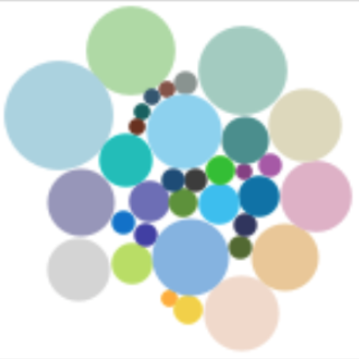 |
| disturbing | 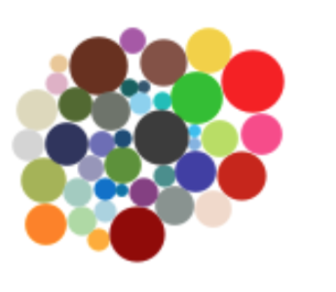 |
| exciting | 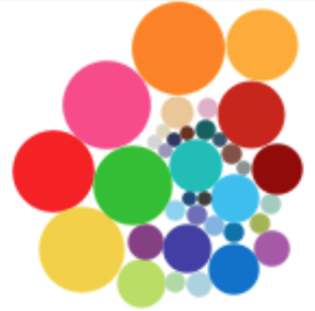 |
| negative | 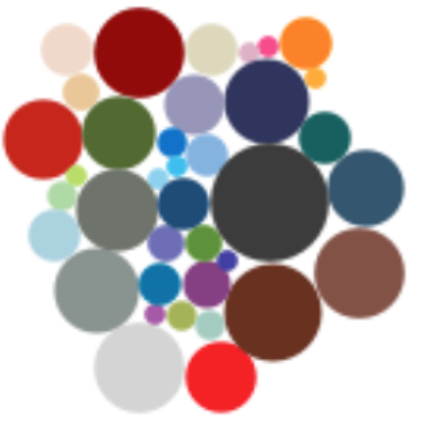 |
| playful | 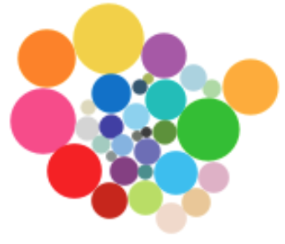 |
| positive | 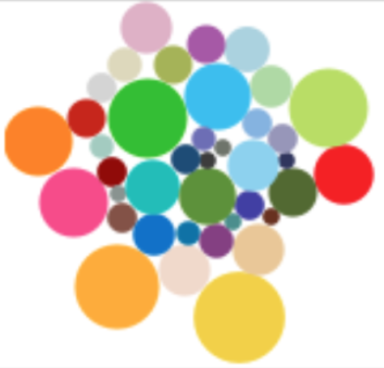 |
| serious | 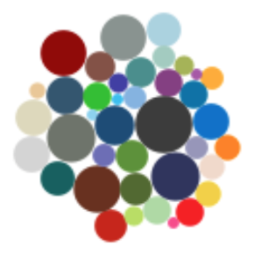 |
| trustworthy | 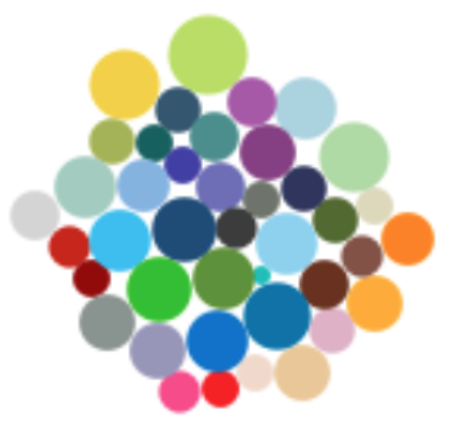 |
The paper is quite interesting but I actually couldn’t find the list of colors for each affect! So below is my simple analysis where I read in the image of the frequency plot, convert the colors to hex colors and remove white background to get the frequency of the colors. I plot then the top 10 colors for each affect.
walk(names(imgs), ~{
g <- colors %>%
filter(affect == .x) %>%
slice_max(prop, n = 10) %>%
mutate(color = fct_reorder(color, prop)) %>%
ggplot(aes(prop, color)) +
geom_col(aes(fill = I(color)), color = "black") +
labs(title = .x, x = "Proportion", y = "") +
scale_x_continuous(expand = c(0.01, 0)) +
theme(text = element_text(size = 14),
panel.background = element_blank(),
panel.grid.major.x = element_line(color = "grey", linetype = "dashed"),
axis.ticks.length = unit(0, "mm"))
print(g)
})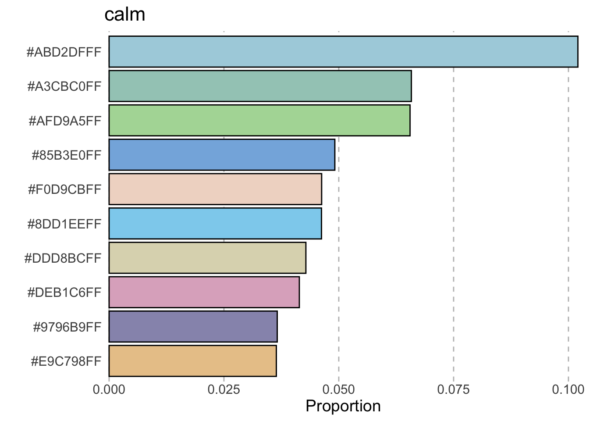
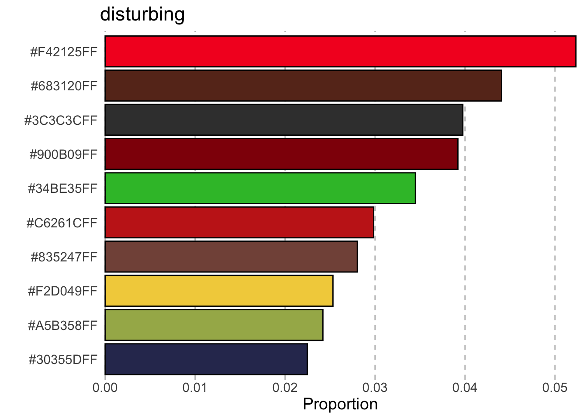
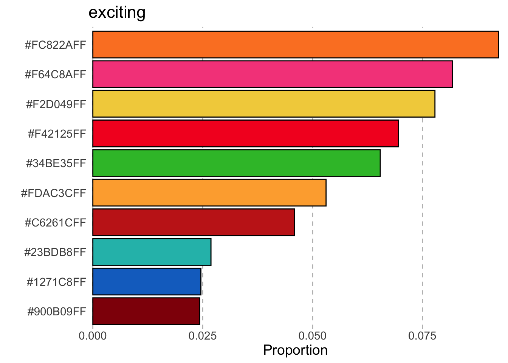
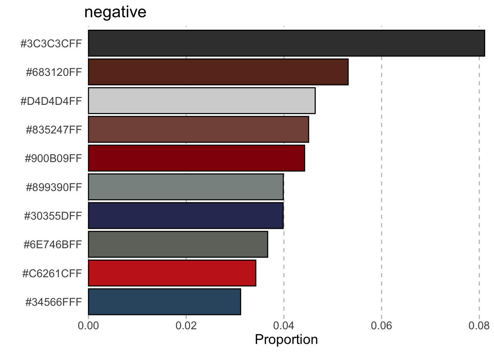
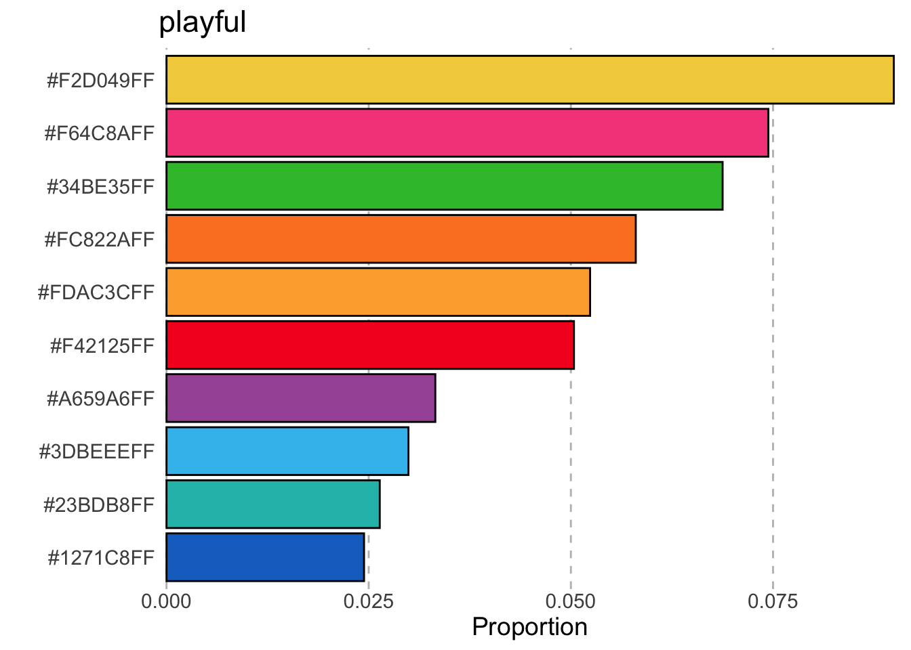
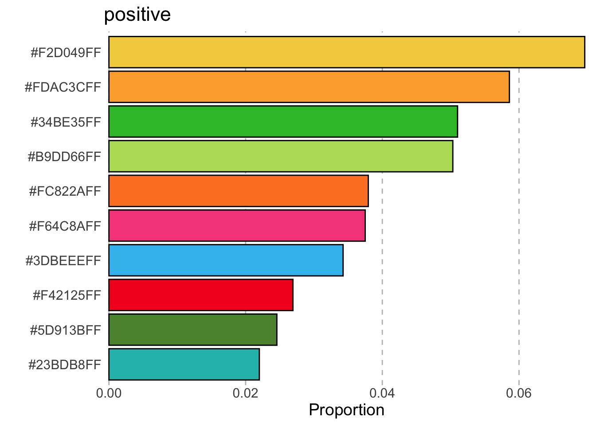
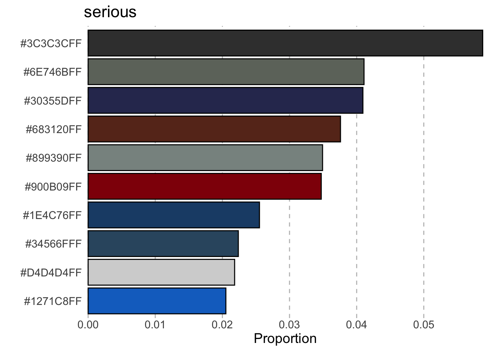
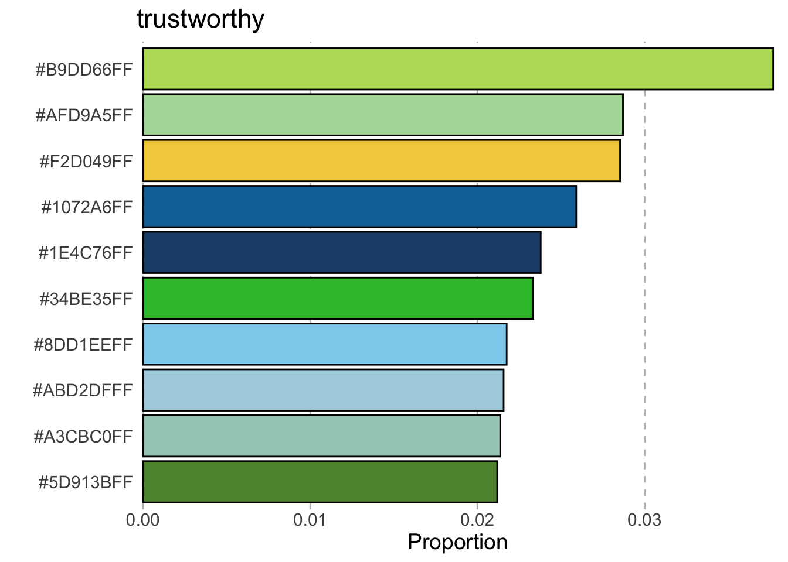
References
Bartram, Lyn, Abhisekh Patra, and Maureen Stone. 2017. “Affective Color in Visualization.” In Proceedings of the 2017 CHI Conference on Human Factors in Computing Systems, 1364–74. CHI ’17. New York, NY, USA: Association for Computing Machinery. https://doi.org/10.1145/3025453.3026041.